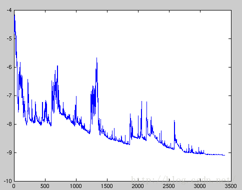

当我们了解的反向传播算法之后，那么每一次的梯度更新就尤为重要，常见梯度下降方法有SGD、BGD。以及针对梯度下降的各种优化算法Momentum、Adam，RMSProp等。
先来了解下Loss function和Cost Function的区别
Loss function \[ L(\hat{y}, y) = -[y\ log\hat{y} + (1-y)\ log(1 - \hat{y})] \] 衡量了单个训练样本上的表现
Cost function \[ J(W, b) = \frac{1}{m} \sum_{i=1}^{m} L(\hat{y}^{(i)}, y^{(i)}) \] 衡量的是在全体训练样本上的表现
1. 批量梯度下降(BGD)
参数更新时间：输入完全部数据
每次输入X中的一列数据r，计算出Loss：\(J_r(W, b)\)
输入完全部 \(m\) 列数据之后，计算整个批次的权重更新量 \[ \begin{aligned} \Delta W^{(l)} &= \frac{1}{m} \sum_{r=1}^{m} \frac{\partial J_r(W, b)}{\partial W^{(l)}} \\ \Delta b^{(l)} &= \frac{1}{m} \sum_{r=1}^{m} \frac{\partial J_r(W, b)}{\partial b^{(l)}} \end{aligned} \] 然后进行参数更新： \[ \begin{aligned} \Delta W^{(l)} &= W^{(l)} - \alpha \Delta W^{(l)}\\ \Delta b^{(l)} &= b^{(l)} - \alpha \Delta b^{(l)} \end{aligned} \] 上面的式子是针对第 \(l\) 层的参数更新，其它层同理。
由于我们每进行一次参数更新需要计算整体训练数据的梯度，批量梯度下降会变得很慢并且一遇到内存吃不下数据就挂。
2. 随机梯度下降(SGD)
参数更新时间：输入一个数据
每次随机选择X中的一列数据r，计算出Loss：\(J_r(W, b)\)
计算该列数据的权重更新： \[ \begin{aligned} \Delta W^{(l)} &= \frac{\partial J_r(W, b)}{\partial W^{(l)}} \\ \Delta b^{(l)} &= \frac{\partial J_r(W, b)}{\partial b^{(l)}} \end{aligned} \] 进行参数更新： \[ \begin{aligned} \Delta W^{(l)} &= W^{(l)} - \alpha \Delta W^{(l)}\\ \Delta b^{(l)} &= b^{(l)} - \alpha \Delta b^{(l)} \end{aligned} \]
随机梯度下降是通过每个样本来迭代更新一次，如果样本量很大的情况（例如几十万），那么可能只用其中几万条或者几千条的样本，就已经将theta迭代到最优解了，对比上面的批量梯度下降，迭代一次需要用到十几万训练样本，一次迭代不可能最优，如果迭代10次的话就需要遍历训练样本10次。但是，SGD伴随的一个问题是噪音较BGD要多，使得SGD并不是每次迭代都向着整体最优化方向。

3. 小批量梯度下降(Mini-Batch GD)
参数更新时间：输入完一个Mini-Batch
将样本集 \(X\) 划分为多个包含batch_size个数据的集合，设其中一个集合是 \(X_b\)
每次输入 \(X_b\) 中的一列数据 \(r\) 并计算Loss：\(J_r(W, b)\)
输入完一个Mini-Batch后，计算权重更新量： \[ \begin{aligned} \Delta W^{(l)} &= \frac{1}{m_b} \sum_{r=1}^{m_b} \frac{\partial J_r(W, b)}{\partial W^{(l)}} \\ \Delta b^{(l)} &= \frac{1}{m_b} \sum_{r=1}^{m_b} \frac{\partial J_r(W, b)}{\partial b^{(l)}} \end{aligned} \] 进行参数更新： \[ \begin{aligned} \Delta W^{(l)} &= W^{(l)} - \alpha \Delta W^{(l)}\\ \Delta b^{(l)} &= b^{(l)} - \alpha \Delta b^{(l)} \end{aligned} \]
集成了上述两种方法的优点：算法的训练过程比较快，而且也要保证最终参数训练的准确率。
4. 小批量随机梯度下降(Mini-Batch SGD)
参数更新时间：输入完一个Mini-Batch
每次随机选择 \(X\) 中的一个数据 \(r\) 并计算Loss：\(J_r(W, b)\)
循环 \(m_b\) 次，即batch_size次后，计算权重更新量： \[
\begin{aligned}
\Delta W^{(l)} &= \frac{1}{m_b} \sum_{r=1}^{m_b} \frac{\partial J_r(W, b)}{\partial W^{(l)}} \\
\Delta b^{(l)} &= \frac{1}{m_b} \sum_{r=1}^{m_b} \frac{\partial J_r(W, b)}{\partial b^{(l)}}
\end{aligned}
\] 进行参数更新： \[
\begin{aligned}
\Delta W^{(l)} &= W^{(l)} - \alpha \Delta W^{(l)}\\
\Delta b^{(l)} &= b^{(l)} - \alpha \Delta b^{(l)}
\end{aligned}
\]
该方法与3不同的地方在于，不需要划分Mini-Batch